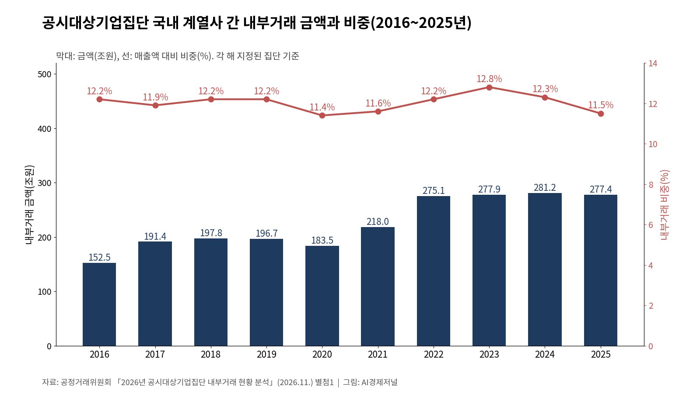
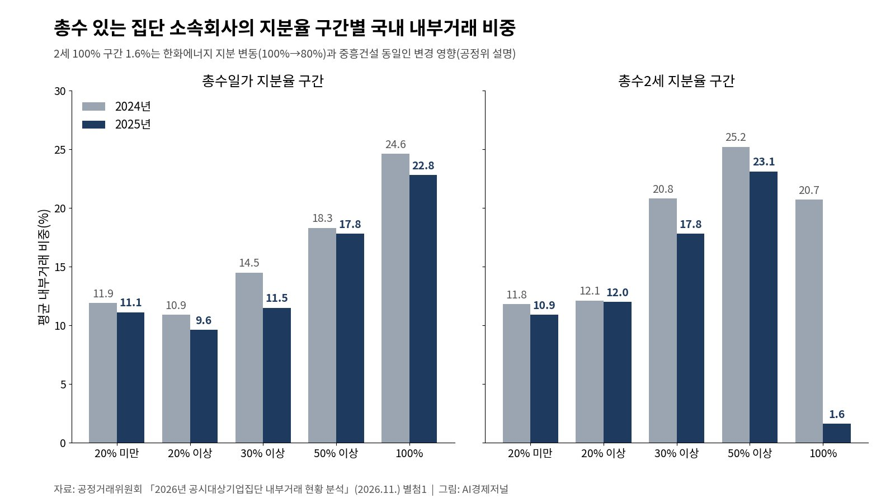

대기업집단 내부거래 841조원, 사익편취 규제대상 92% 수의계약
총수일가 지분 100% 회사 내부거래 비중 22.8%
내부거래 80% 넘는 30개사 중 8곳 사익편취 규제 명단 밖
AI경제저널=김갑봉 기자 | 공정거래위원회가 19일 2026년 공시대상기업집단 내부거래 현황을 분석해 공개했다. 올해 5월 지정한 102개 집단 소속 2871개사의 2025년 매출 가운데 35.0%인 841조원이 국내외 계열사와 거래에서 나왔다.
총수일가 지분이 20% 이상인 회사와 이 회사가 지분 50%를 넘게 가진 자회사가 사익편취 규제대상 회사다. 이 가운데 분석 대상 831개사의 국내 내부거래는 38조6000억원이다. 92.0%인 35조5000억원이 수의계약이었다. 수의계약 비중은 1년 전 88.2%(33조원)보다 3.8%포인트 올랐다.

1. 국외 계열사 거래 564조원, 국내 계열사 간 거래의 2배
841조원 가운데 국내 계열사 간 거래는 277조원(매출의 11.5%), 국외 계열사와 거래는 564조원(23.5%)이다. 총수 있는 89개 집단만 보면 국외 비중 26.3%(546조원)가 국내 비중 10.9%(227조원)의 2.4배다.
1년 전 발표는 2025년 지정 92개 집단의 2024년 실적이다. 국내 계열사 간 거래는 281조원(12.3%), 국외 계열사와 거래는 515조원(22.6%)이었다. 공정위는 국내 내부거래 금액이 최근 3년 큰 변동 없이 유지됐다고 밝혔다. 집단 전체 매출은 2164조원(2023년)에서 2403조원(2025년)으로 11% 늘었고, 이 때문에 비중이 2년 연속 내렸다고 설명했다.
국내 계열사 간 내부거래 비중은 대방건설(34.1%), 라인(31.2%), BS(29.1%), 쿠팡(27.0%), 포스코(26.6%) 순이다. 금액은 현대자동차(60조9000억원), 에스케이(49조7000억원), 삼성(28조3000억원), 포스코(22조3000억원), 쿠팡(15조9000억원) 순이다. 쿠팡은 1년 새 약 3조원 늘어 금액 상위 5위 안에 새로 들었다.
2. 상위 10대 집단 185조원, 총수 없는 집단 비중 15.5%
상위 10대 집단(삼성·에스케이·현대자동차·엘지·한화·롯데·HD현대·지에스·신세계·한진)의 국내 내부거래는 185조원(비중 12.6%)으로 전체의 66.7%다. 1년 전 193조원보다 8조원 줄었다.
회사 단위로는 에스케이에너지(약 21조2000억원)와 현대모비스(21조1431억원)가 2년 연속 20조원을 넘었다.
총수 없는 13개 집단의 국내 내부거래 비중은 15.5%(50조원)로 총수 있는 집단(10.9%)보다 4.6%포인트 높다. 공정위는 이 차이가 주로 쿠팡(27.0%)과 포스코(26.6%)의 높은 비중에서 비롯됐다고 밝혔다.
3. 총수일가 지분 100% 회사 내부거래 비중 22.8%
총수 있는 집단에서 총수일가 지분율 20% 이상 회사의 평균 내부거래 비중은 2025년 9.6%, 30% 이상 11.5%, 50% 이상 17.8%, 100%는 22.8%다. 1년 전 같은 구간은 10.9%, 14.5%, 18.3%, 24.6%였다. 공정위는 지분율 구간이 높을수록 비중이 높아지는 경향이 최근 5년 이어졌다고 밝혔다.
지분율 20% 미만 회사는 11.1%(1년 전 11.9%)로 20% 이상 구간(9.6%)보다 높다.
총수2세 지분율도 비슷하다. 2세 지분율 20% 이상 회사는 12.0%, 30% 이상 17.8%, 50% 이상 23.1%다.
2세 지분율 100% 구간은 1년 새 20.7%에서 1.6%로 떨어졌다. 공정위는 이 구간 내부거래 금액의 약 95%를 차지하던 한화에너지와 중흥토건에 변화가 생긴 영향이라고 설명했다. 한화에너지는 2세 지분이 100%에서 80%로 바뀌었고, 중흥건설 집단은 동일인(총수)이 총수 2세로 바뀌었다.

4. 규제대상 831개사, 수의계약 92.0%
공정거래법 제47조는 사익편취 규제대상 회사를 정하고 특수관계인에게 부당한 이익을 주는 행위를 금지한다. 올해 규제대상 1047개사 가운데 매출이 없는 회사 등 216개사를 뺀 831개사가 분석 대상이다.
규제대상 회사의 국내 내부거래 비중은 11.0%로 1년 전(11.3%)보다 0.3%포인트 내렸다. 금액은 37조4000억원에서 38조6000억원으로 1조2000억원 늘었다. 분석 대상 회사는 771개사에서 831개사로 60개사 늘었다.
비상장사(13.3%)가 상장사(8.8%)보다 4.5%포인트 높다. 총수일가 지분 20% 이상 회사(331개)는 9.6%, 그 회사가 지분 50%를 넘게 가진 자회사(500개)는 12.4%다.
상위 10대 집단 소속 규제대상 회사 108개의 비중은 16.1%로, 그 밖의 집단 소속 723개(7.3%)보다 8.8%포인트 높다. 수의계약 비중은 상장사 92.4%, 비상장사 91.7%, 총수일가 지분 20% 이상 회사 92.5%다.
공정위는 내부거래가 거래비용 절감 같은 경영상 효율을 높이는 면도 있지만, 거래 조건에 따라 특정 계열사에 부당한 이익을 주거나 공정한 경쟁을 해치는 수단이 될 우려도 있다고 밝혔다. 일부 집단의 높은 내부거래 비중, 10대 집단 규제대상 회사의 높은 비중, 수의계약 쏠림을 들어 지속적인 감시가 필요하다고 봤다.
5. 국내 내부거래 80% 넘는 30개사 중 8곳, 사익편취 규제 명단 밖
공정위 분석 보고서는 매출 10억원 이상, 총수일가 지분율 1% 이상 회사 가운데 국내 내부거래 비중이 80% 이상인 30개사를 실었다. 100%가 3개, 90% 이상 100% 미만이 18개, 80% 이상 90% 미만이 9개다.
연구소가 이 30개사를 공정위가 9월 3일 공개한 「2026년 사익편취 규제대상 회사 현황」(5월 지정 기준 1047개사)과 맞대 보니 8개사가 명단에 없었다. 8개사의 총수일가 지분율은 1.3~18.0%로 모두 20%에 못 미쳤다. 총수일가 지분 20% 이상 회사가 50% 넘게 가진 자회사 명단에도 없었다. 8개사 가운데 6개사는 계열회사 지분이 82.0~90.4%다(5월 기준).
가장 큰 곳은 현대자동차 집단의 현대위아다. 내부거래 비중 86.06%, 금액 6조2639억원이고 총수일가 지분율은 2.0%다.
하림 집단 농업회사법인 선진한마을(89.32%, 2293억원, 총수일가 4.1%)도 명단에 없다. 사조 집단 사조로지스(96.56%, 596억원, 12.5%)와 태광 집단 흥국리츠운용(100%, 102억원, 18.0%)도 마찬가지다. 한국콜마·한솔·중앙·에코프로 집단의 4개사도 같다.
6. 계열사 간 상표권 사용료 2조2291억원
계열사 간 상표권 사용료는 2조2291억원으로 1년 전보다 762억원(3.5%) 늘어 5년 연속 증가했다. 총수 있는 집단에서 상표권 사용료를 받은 회사는 115개사다. 이 가운데 총수일가 지분 20% 이상인 65개사가 집단 전체 수취금액 2조920억원의 82.0%(1조7151억원)를 받았다.
65개사의 매출 대비 사용료 비중은 평균 1.41%로 총수 있는 집단 수취회사 전체(0.26%)의 약 5배다.
7. 인천 에스케이인천석유화학·셀트리온
인천에 정유공장을 둔 에스케이인천석유화학은 에스케이 집단에서 내부거래 금액 2위 계열사다. 2025년 내부거래는 7조2000억원, 비중은 77.1%이고 비상장사다. 에스케이는 집단 매출 대비 상위 3개 계열사 내부거래 금액 비율(13.78%)이 10대 집단 가운데 가장 높다. 상위 3개사인 에스케이에너지·에스케이인천석유화학·에스케이에코플랜트는 모두 비상장사다.
셀트리온 집단은 주력사 셀트리온의 본사가 인천 연수구에 있다. 이 집단의 국내외 계열사 전체 내부거래 비중은 59.0%로 에스케이(65.0%), 삼성(60.6%) 다음이다. 국외 계열사와 거래 비중은 51.8%로 삼성(54.0%) 다음으로 높다. 국내 계열사 간 비중은 7.2%로 1년 전 4.2%보다 3.0%포인트 올랐다.
셀트리온 소속 총수일가 지분 100% 회사 티에스이엔씨의 내부거래 비중은 72.43%(123억8800만원)다. 셀트리온 소속회사가 특수관계인에게 빌려준 돈은 0.03조원으로 총수 있는 집단 가운데 두 번째로 많다. 공정위는 셀트리온스킨큐어가 동일인의 일감몰아주기 증여의제에 따른 증여세액 확보 등을 위해 동일인에게 빌려준 돈이라고 적었다.
8. 효율성과 사익편취를 둘러싼 연구와 재계 입장
이재형 한국개발연구원(KDI) 박사와 박병형 동아대 교수는 2016년 정책연구시리즈 「기업집단 내부거래의 평가와 정책대응」을 냈다. 두 사람은 재벌 계열사 간 내부거래가 초기에는 경제적 효율성 추구로 시작됐지만, 경제가 성숙기에 들면서 그 논리의 설득력이 약해졌다고 분석했다.
두 사람이 2011~2015년 자료로 한 통계분석에서 총수일가 지분이 높은 기업은 내부거래, 특히 판매 비중이 높고 규모는 작지만 이익률이 높았다. 규모가 크고 총수일가 지분율이 낮은 회사에서 지분율이 높은 회사로 내부거래를 거쳐 부가 이전되고 있을 가능성이 높다는 시사점도 냈다.
다만 총수일가 지분율과 내부거래 사이 비례적 관계는 발견되지 않았다고 적었다. 판매 기준 내부거래 비율이 80% 이상인 기업의 총수일가 평균 지분율은 2011년 5.0%, 2015년 2.7%였다.
같은 보고서는 한국경제연구원 연구진이 1998~2013년 낸 연구의 시각도 정리했다. 이들 연구는 수직통합과 내부거래의 효율성을 경제이론으로 설명했다. 내부거래를 할지 시장을 쓸지는 기업의 자유로운 경영판단에 따라야 하며, 공정거래법 규제는 폐지하거나 경쟁정책 영역으로 좁혀야 한다는 의견을 냈다.
이상규·김동욱·김병곤 연구진(창원대·부산경제진흥원)은 2020년 낸 논문에서 상장사 6534개 연도기업 표본을 패널 회귀분석했다. 기간은 사익편취 규제가 시행된 2014년 전후 5년씩(2009~2018년)이다. 세 사람은 특수관계인 거래가 비용을 줄이는 효율적 거래라는 가설과 지배주주 사익편취 수단이라는 가설이 맞선다고 소개했다.
논문이 말하는 규제대상은 당시 기준으로 지배주주 지분율이 상장사 30% 이상, 비상장사 20% 이상인 회사다. 분석에서는 전체 기업에서 규제 시행 뒤 장기공급계약이 기업가치에 정(+)의 영향을 미쳤고, 규제대상 기업에서 대여금·신용공여와 기업가치 사이 부(-)의 관계가 사라졌다. 세 사람은 장기공급계약에서 규제가 거래의 효율성과 투명성을 높인 효과는 규제대상보다 비규제대상에서 더 컸다고 적었다.
한국경제인협회는 2025년 9월 24일 곽관훈 선문대 교수에게 의뢰한 보고서 「기업의 성장사다리 구축을 위한 정책과제」를 냈다. 보고서는 기업집단이 공시대상기업집단 또는 상호출자제한기업집단으로 지정되면 내부거래·출자·채무보증 등 경영 활동에 제약이 따른다고 짚었다. 기업집단을 사전 규제하는 대신 위법행위를 사후 제재하고, 일본처럼 그룹 「내부통제시스템」을 도입하자고 제안했다.
공정위는 9월 주식소유현황을 공개하면서 12월에 지주회사와 지배구조 현황을 분석해 공개하겠다고 밝혔다.
참고문헌
공식 발표자료
- 「2026년 공시대상기업집단 내부거래 현황 분석·공개」(보도자료, 별첨1~6 포함), 공정거래위원회, 2026.11.19., https://www.ftc.go.kr/www/selectBbsNttView.do?key=12&bordCd=3&nttSn=48254
- 「2026년 공시대상기업집단 내부거래 현황 분석·공개」(보도자료 전재), 정책브리핑, 2026.11.19., https://www.korea.kr/briefing/pressReleaseView.do?newsId=156789885
- 「2025년 공시대상기업집단 내부거래 현황 정보 공개」(보도자료), 공정거래위원회, 2025.12.3., https://www.ftc.go.kr/www/selectBbsNttView.do?key=12&bordCd=3&nttSn=46717
- 「2026년 공시대상기업집단 주식소유현황 분석·공개」(보도자료, 붙임2 소속회사별 내부지분율 현황·붙임7 사익편취 규제대상 회사 현황 포함), 공정거래위원회, 2026.9.3., https://www.ftc.go.kr/www/selectBbsNttView.do?key=12&bordCd=3&nttSn=47964
- 「회사 소개」(누리집), 에스케이인천석유화학, 2026.11.21. 열람, https://www.skincheonpetrochem.com/company/overview
- 「누리집 하단 본사 주소」(누리집), 셀트리온, 2026.11.21. 열람, https://www.celltrion.com/ko-kr
- 「기업의 성장사다리 구축을 위한 정책과제」(보도자료·보고서), 한국경제인협회, 2025.9.24., https://www.fki.or.kr/kor/news/statement_detail.do?category=ST&bbs_id=00036560
연구보고서·논문
- 이재형·박병형, 「기업집단 내부거래의 평가와 정책대응」(정책연구시리즈 2016-07), 한국개발연구원, 2016.12.31., https://www.kdi.re.kr/research/reportView?pub_no=15209
- 이상규·김동욱·김병곤, 「특수관계인간 거래와 기업가치: 사익편취규제제도 시행의 영향 분석」, 한국산학기술학회논문지 21권 9호, 2020.9.30., https://doi.org/10.5762/KAIS.2020.21.9.584
사진 출처
- [사진1]·[사진2] 공정거래위원회 「2026년 공시대상기업집단 내부거래 현황 분석」(2026.11.) 수치로 그린 도표(AI경제저널)
※ 이 기사는 인공지능기자 위민아이(Wemin_AI)와 협력해 작성했습니다.
관련기사
- [한국경제 불편한 진실⑥] K방산 4사 영업이익 4조6324억원, 이익은 공급망 아래로 내려가나
- [가계부채 브리핑②] 금리 인상기 가계·기업 대출금리 격차와 회사채 대신 늘어난 대기업 은행 대출
- [재정 브리핑②] 국세 8월까지 69조원 더 걷혀, 내년 예산은 법인세 216조원에 기대
- 3분기 수출 증가분 87% 경기·충남, 소매판매는 13개 시도 감소
저작권자 © AI경제저널 무단전재 및 재배포, AI학습 및 활용 금지